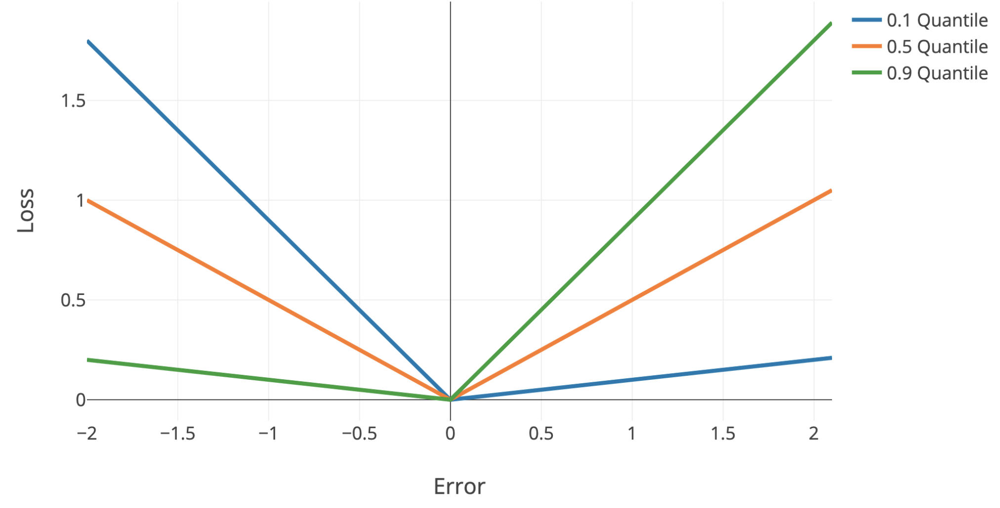
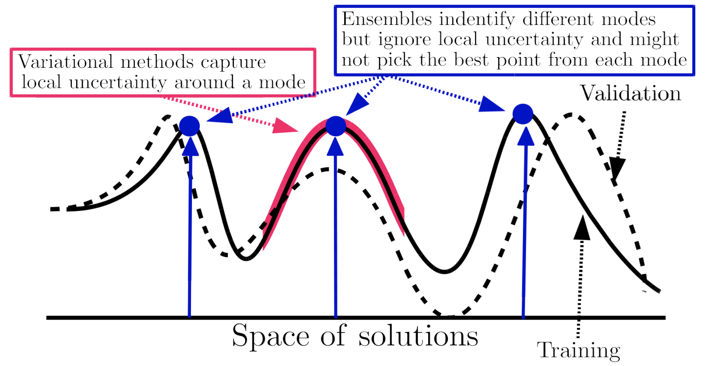

uncertainty
view markdownsome notes on uncertainty in machine learning, particularly deep learning
basics
- calibration - predicted probabilities should match real probabilities
- platt scaling - given trained classifier and new calibration dataset, basically just fit a logistic regression from the classifier predictions -> labels
- isotonic regression - nonparametric, requires more data than platt scaling
- piecewise-constant non-decreasing function instead of logistic regression
- confidence - predicted probability = confidence, max margin, entropy of predicted probabilities across classes
- ensemble uncertainty - ensemble predictions yield uncertainty (e.g. variance within ensemble)
- quantile regression - use quantile loss to penalize models differently + get confidence intervals
- can easily do this with sklearn
- quantile loss = $\begin{cases} \alpha \cdot \Delta & \text{if} \quad \Delta > 0\\(\alpha - 1) \cdot \Delta & \text{if} \quad \Delta < 0\end{cases}$
- $\Delta =$ actual - predicted

- Single-Model Uncertainties for Deep Learning (tagovska & lopez-paz 2019) - use simultaneous quantile regression
outlier-detection
Note: outlier detection uses information only about X to find points “far away” from the main distribution
- overview from sklearn
- elliptic envelope - assume data is Gaussian and fit elliptic envelop (maybe robustly) to tell when data is an outlier
- local outlier factor (breunig et al. 2000) - score based on nearest neighbor density
- idea: gradients should be larger if you are on the image manifold
- isolation forest (liu et al. 2008) - lower average number of random splits required to isolate a sample means more outlier
- one-class svm - estimates the support of a high-dimensional distribution using a kernel (2 approaches:)
- separate the data from the origin (with max margin between origin and points) (scholkopf et al. 2000)
- find a sphere boundary around a dataset with the volume of the sphere minimized (tax & duin 2004)
- detachment index (kuenzel 2019) - based on random forest
- for covariate $j$, detachment index $d^j(x) = \sum_i^n w (x, X_i) \vert X_i^j - x^j \vert$
- $w(x, X_i) = \underbrace{1 / T\sum_{t=1}^{T}}{\text{average over T trees}} \frac{\overbrace{1{ X_i \in L_t(x) }}^{\text{is } X_i \text{ in the same leaf?}}}{\underbrace{\vert L_t(x) \vert}{\text{num points in leaf}}}$ is $X_i$ relevant to the point $x$?
- for covariate $j$, detachment index $d^j(x) = \sum_i^n w (x, X_i) \vert X_i^j - x^j \vert$
uncertainty detection
Note: uncertainty detection uses information about X / $\phi(X)$ and Y, to find points for which a particular prediction may be uncertain. This is similar to the predicted probability output by many popular classifiers, such as logistic regression.
- rejection learning - allow models to reject (not make a prediction) when they are not confidently accurate (chow 1957, cortes et al. 2016)
- To Trust Or Not To Trust A Classifier (jiang, kim et al 2018) - find a trusted region of points based on nearest neighbor density (in some embedding space)
- trust score uses density over some set of nearest neighbors
- do clustering for each class - trust score = distance to once class’s cluster vs the other classes
bayesian approaches
- epistemic uncertainty - uncertainty in the DNN model parameters
- without good estimates of this, often get aleatoric uncertainty wrong (since $p(y\vert x) = \int p(y \vert x, \theta) p(\theta \vert data) d\theta$
- aleatoric uncertainty - inherent and irreducible data noise (e.g. features contradict each other)
- this can usually be gotten by predicting a distr. $p(y \vert x)$ instead of a point estimate
- ex. logistic reg. already does this
- ex. regression - just predict mean and variance of Gaussian
- gaussian processes
neural networks
directly predict uncertainty
- Inhibited Softmax for Uncertainty Estimation in Neural Networks (mozejko et al. 2019) - directly predict uncertainty by adding an extra output during training
- Learning Confidence for Out-of-Distribution Detection in Neural Networks (devries et al. 2018) - predict both prediction p and confidence c
- during training, learn using $p’ = c \cdot p + (1 - c) \cdot y$
- Bias-Reduced Uncertainty Estimation for Deep Neural Classifiers (geifmen et al. 2019)
- just predicting uncertainty is biased
- estimate uncertainty of highly confident points using earlier snapshots of the trained model
- Contextual Outlier Interpretation (liu et al. 2018) - describe outliers with 3 things: outlierness score, attributes that contribute to the abnormality, and contextual description of its neighborhoods
- Energy-based Out-of-distribution Detection (liu et al. 2021)
- Getting a CLUE: A Method for Explaining Uncertainty Estimates
- The Right Tool for the Job: Matching Model and Instance Complexities - ACL Anthology - at each layer, model outputs a prediction - if it’s confident enough it returns, otherwise it continues on to the next layer
nearest-neighbor methods
- Deep k-Nearest Neighbors: Towards Confident, Interpretable and Robust Deep Learning (papernot & mcdaniel, 2018)
- distance-based confidence scores (mandelbaum et al. 2017) - use either distance in embedding space or adversarial training to get uncertainties for DNNs
- deep kernel knn (card et al. 2019) - predict labels based on weighted sum of training instances, where weights are given by distance in embedding space
- add an uncertainty based on conformal methods
ensemble approaches
- DNN ensemble uncertainty works - predict mean and variance w/ each network then ensemble (don’t need to do bagging, random init is enough)
- can also use ensemble of snapshots during training (huang et al. 2017)
- alternatively batch ensemble (wen et al. 2020) - have several rank-1 keys that index different weights hidden within one neural net
- Deep Ensembles: A Loss Landscape Perspective (fort, hu, & lakshminarayanan, 2020)
- different random initializations provide most diversity
- samples along one path have varying weights but similar predictions

- Pitfalls of In-Domain Uncertainty Estimation and Ensembling in Deep Learning - many complex ensemble approaches are similar to just an ensemble of a few randomly initialized DNNs
bayesian neural networks
- blog posts on basics
-
want $p(\theta x) = \frac {p(x \theta) p(\theta)}{p(x)}$ - $p(x)$ is hard to compute
-
- slides on basics
- Bayes by backprop (blundell et al. 2015) - efficient way to train BNNs using backprop
- Instead of training a single network, trains an ensemble of networks, where each network has its weights drawn from a shared, learned probability distribution. Unlike other ensemble methods, the method typically only doubles the number of parameters yet trains an infinite ensemble using unbiased Monte Carlo estimates of the gradients.
- Evaluating Scalable Bayesian Deep Learning Methods for Robust Computer Vision
- icu bayesian dnns
- focuses on epistemic uncertainty
- could use one model to get uncertainty and other model to predict
- Dropout as a Bayesian Approximation: Representing Model Uncertainty in Deep Learning
- dropout at test time gives you uncertainty
- SWAG (maddox et al. 2019) - start with pre-trained net then get Gaussian distr. over weights by training with large constant setp-size
- Efficient and Scalable Bayesian Neural Nets with Rank-1 Factors (dusenberry, jerfel et al. 2020) - BNNs scale to SGD-level with better calibration
conformal inference
- conformal inference constructs valid (wrt coverage error) prediction bands for individual forecasts
- relies on few parametric assumptions
- holds in finite samples for any distribution of (X, Y) and any algorithm $\hat f$
- starts with vovk et al. ‘90
- simple example: construct a 95% interval for a new sample (not mean) by just looking at percentiles of the empirical data
- empirical data tends to undercover (since empirical residuals tend to underestimate variance) - conformal inference aims to rectify this
- Uncertainty Sets for Image Classifiers using Conformal Prediction
- Image-to-Image Regression with Distribution-Free Uncertainty Quantification and Applications in Imaging (Angelopoulos, …jordan, malik, upadhyayula, roman, ‘22)
- pixel-level uncertainties
- Image-to-Image Regression with Distribution-Free Uncertainty Quantification and Applications in Imaging (Angelopoulos, …jordan, malik, upadhyayula, roman, ‘22)